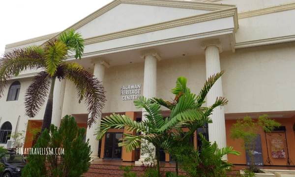
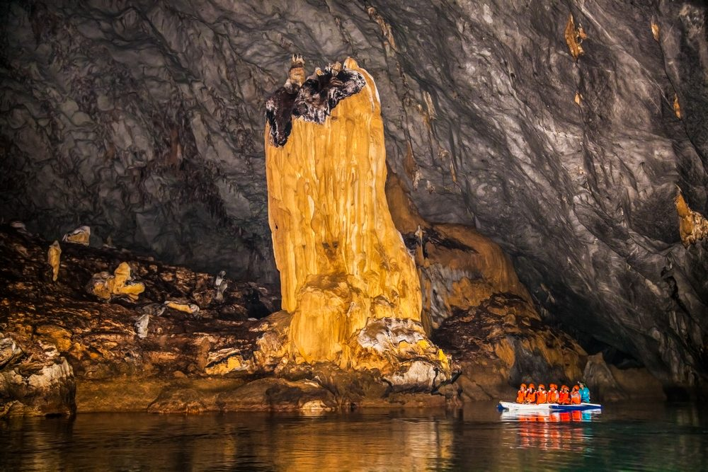
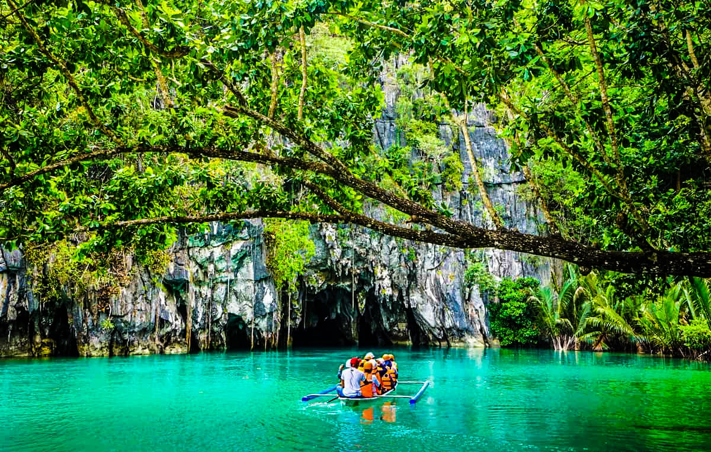
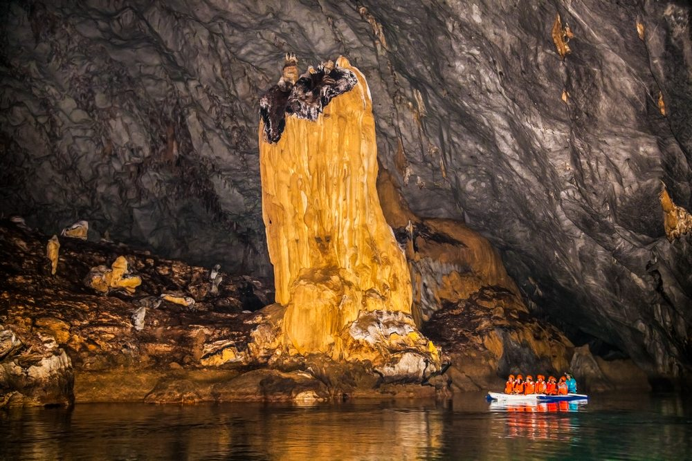
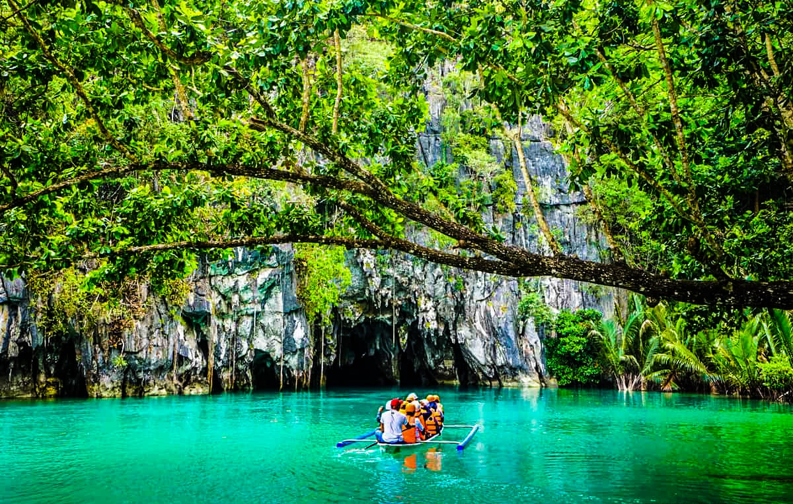

Discover Puerto Princesa's Rich Culture
1. Palawan Heritage Center
Learn about Palawan’s rich history and culture at the Heritage Center, which features traditional art, artifacts, and exhibits.
2. Local Festivals
Celebrate vibrant local festivals like the Baragatan Festival, which showcases the music, dance, and food of Palawan.
Cultural Landmark: Puerto Princesa Underground River
The Puerto Princesa Underground River is a UNESCO World Heritage Site and one of the New 7 Wonders of Nature. It’s famous for its stunning limestone karst landscape and biodiverse ecosystem.
 


